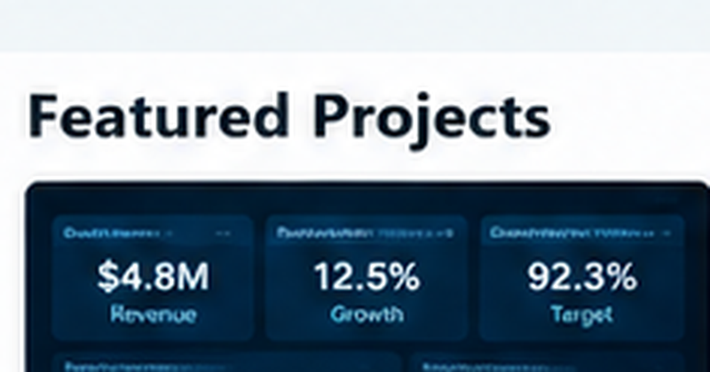
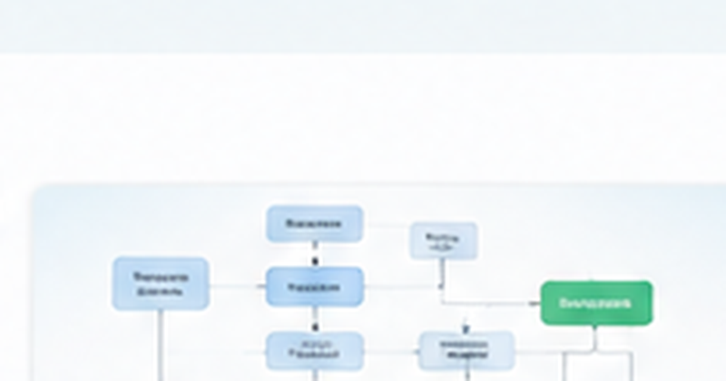
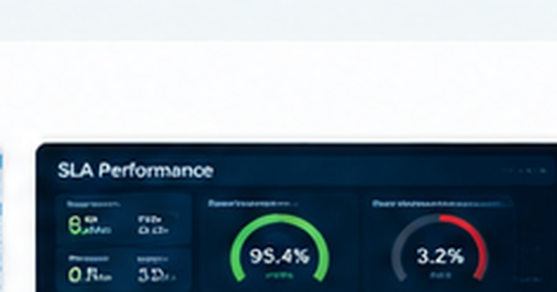
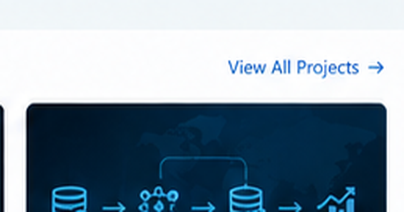

Enterprise KPI & Executive Dashboard
Power BI dashboard with executive KPIs, detailed drilldowns and business insights.
View Project →Data Engineer with 5+ years of experience working with enterprise data, SQL development, ETL/ELT pipelines, relational databases, data warehousing, and analytics platforms. Skilled in SQL/T-SQL, Python, PySpark, Databricks, Snowflake, Power BI, data modeling, data quality, and pipeline troubleshooting. Experienced in building reliable data pipelines, optimizing SQL queries, validating and reconciling data, and delivering well-structured datasets for reporting, analytics, and downstream applications.
I’m a Data Engineer with 5+ years of experience working with SQL, ETL/ELT pipelines, relational databases, data transformation, data quality, and analytics platforms. I enjoy building reliable data pipelines, organizing complex data into well-structured datasets, and solving performance and data-quality issues. My experience also includes Power BI and analytics, which helps me understand how well-designed data platforms support reporting, applications, and business decision-making.

Power BI dashboard with executive KPIs, detailed drilldowns and business insights.
View Project →
End-to-end business process analysis with BRD/FRD, user stories, UAT and gap analysis.
View Project →Data validation, reconciliation, duplicate detection and exception reporting.
View Project →
SLA performance analysis, operational KPIs, root-cause analysis and trend insights.
View Project →
End-to-end ETL pipeline with data transformation, modeling and automated BI reporting.
View Project →Hands-on portfolio implementations focused on ETL/ELT, relational modeling, SQL performance, data quality, Spark processing and analytics-ready data layers. Projects use synthetic data and contain no employer proprietary information.
SQL/Python ingestion and transformation workflow to clean, standardize, validate and load multi-source data.
View Project →Normalized and analytics-oriented schemas with keys, relationships, validation rules and source-to-target mapping.
View Project →Reusable validation, reconciliation and exception checks plus query and indexing optimization examples.
View Project →PySpark and Spark SQL workflow for scalable cleansing, deduplication, aggregation and analytical preparation.
View Project →Governed SQL reporting layer with KPI definitions and reusable business logic for downstream Power BI reporting.
View Project →